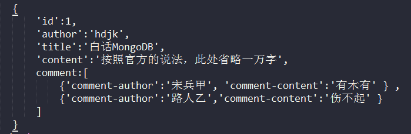
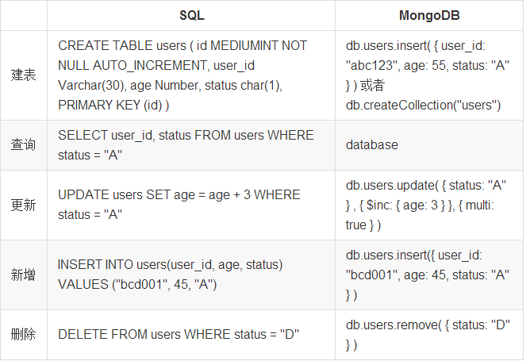
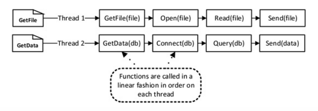
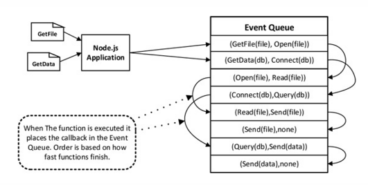
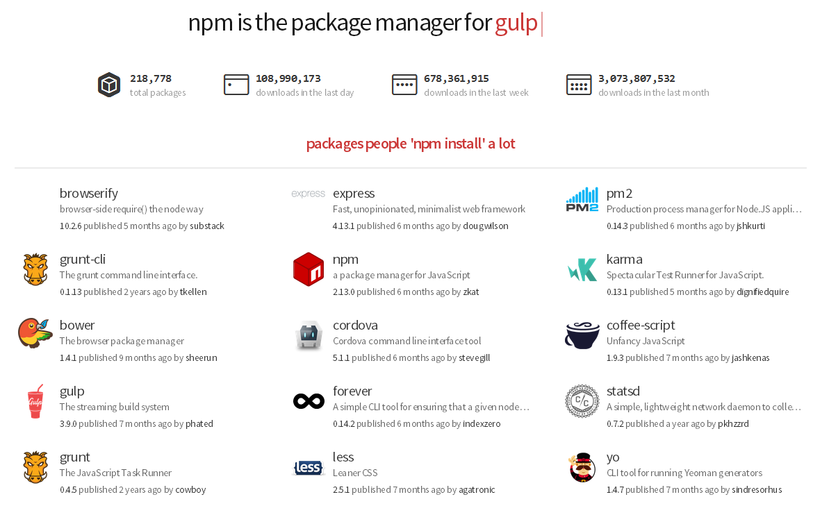
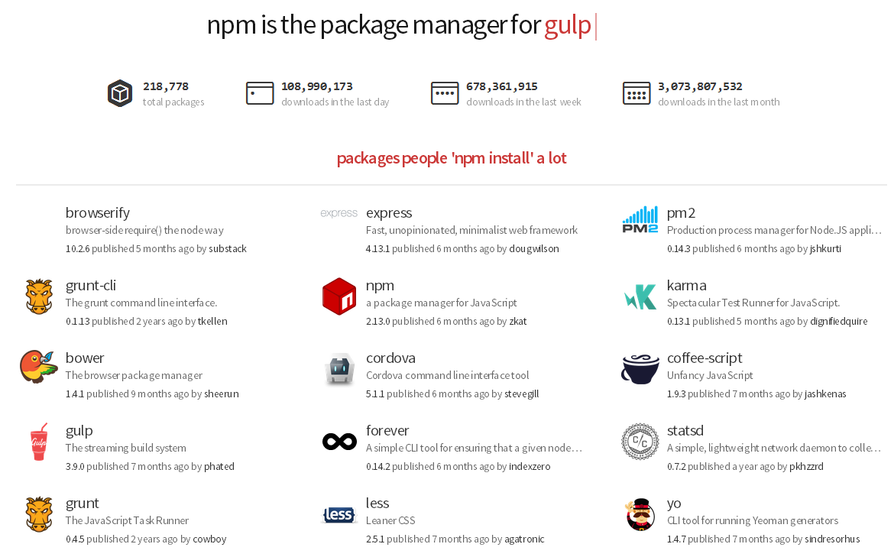
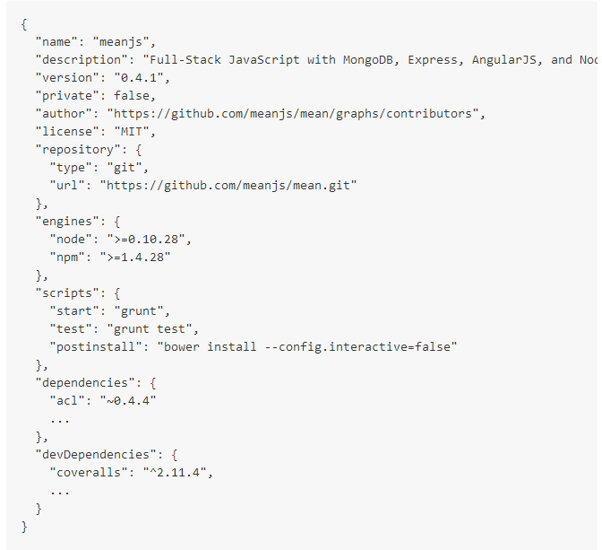
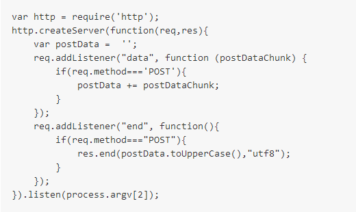
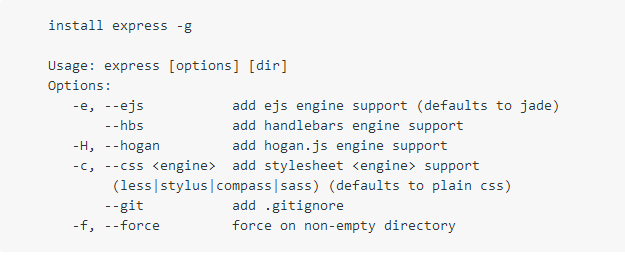
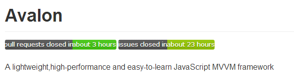

- MongoDB
- Expressjs
- AngularJS
- Node.js
关系数据库
- 范式设计:二维。
- 消除依赖，有利于原子操作。
- 增加关联，查询需要多张表来获得所需要的全部数据。
文档型数据库
- key-value
- 可嵌套的数据集合
- 增加了数据冗余
- 提升查询性能
BSON结构的document 
SQL与mongodb概念对比
| SQL | MongoDB |
|---|---|
| database | database |
| table | collection |
| row | document |
| column | field |
| index | index |
| table joins | embedded documents and linking |
| primary key Specify any unique column or column combination as primary key. |
primary key In MongoDB, the primary key is automatically set to the _id field. |
| aggregation (e.g. group by) | aggregation pipeline |
SQL与mongodb的操作对比

基于Chrome's V8 JavaScript引擎的运行环境,事件驱动,非阻塞I/O模型
 
npm(node.js package manager)
the largest ecosystem of open source libraries in the world. 
the largest ecosystem of open source libraries in the world. 

重要模块
- fs
- http/https
- process
- cluster
- ...
服务器示例


快速

开放

极简

基本结构
- 路由
- 模板引擎
- 中间件
类似框架
- koajs
- thinkjs
简介
- web应用框架，扩展HTML语法
- 高级别的抽象，适用CRUD应用
- 游戏和图形编辑器都是密集和复杂的DOM操作的应用实例
简介
- html弊端：适合静态文档/页面
- 解决方案：javascript处理动效/交互
- 方案弊端：频繁dom操作——>开发效率低、容易出错
- 依赖注入：降低耦合性，利于单元测试
- 模块化：利于代码维护
- 双向数据绑定：利于操作dom
- 指令：增强html
MVC(Model-View-Controller)

MVVM(Model-View-ViewModel)

MVW(Model-View-Whatever)

类似框架

why mean.js?
- 一种开发语言：javascript
- 一种数据格式：JSON
- 多种选择方案